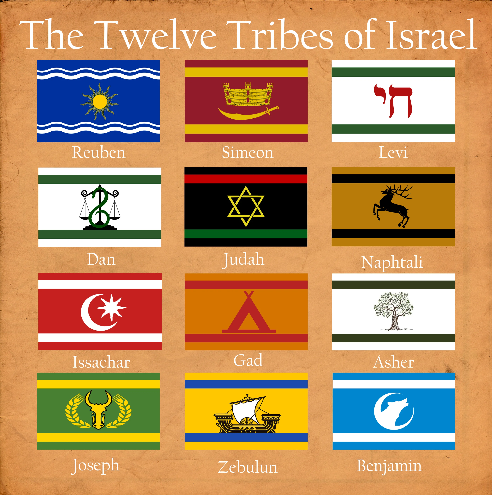
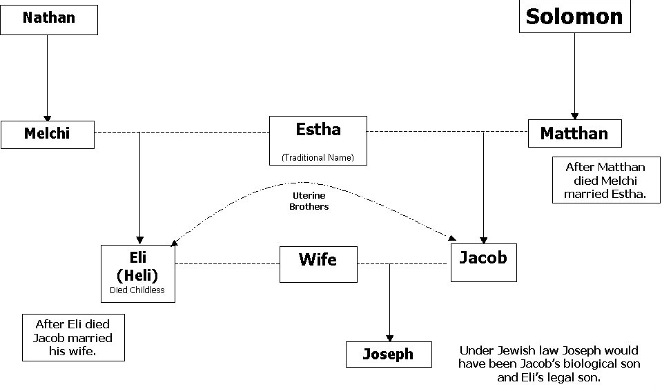

This is a biblical generation list
Still being worked on!!!Content from verses:
Adam
Lived 930 years
Became the father of Seth at age 130
First man ever
Eve
First woman ever
Note, There was never a Lilith in the bible
Made by a rib of Adam
Reference verses: Genesis 4:1
Kane
Able
Killed by Kane because of jealousy Genesis 4:4-8
Seth
Lived 912 years
Became the father of Enosh at age 105
Enosh
Lived 905 years
Became the father of Kenan at age 90
Kenan(Cainan)
Lived 910 years
Became the father of Mahalalel at age 70
Mahalalel
Lived 895 years
Became the father of Jared at age 65
Jared
Lived 962 years
Became the father of Enoch at age 162
Enoch
Lived 365 years
Became the father of Methuselah at age 65
God took him
Methuselah
Lived 782 years
Became the father of Lamech at age 187
Lamech
Lived 777 years
Note: also 182 + 595 = 777Became the father of Noah at age 182
He also had other sons and dauthersNoah
Lived 950 years
Became the father of Shem, Ham and Japheth at age 500Genesis 5:32
The great flood happened when Noah was 600 years old
Note: The flood lasted 150 days.Shem
Became the father of Arphaxad at age 202
Note: shem was born 50 years into the flood so: 150 - 50 + 102 = 202Lived 702 years
Note: Shem lived 500 more years after the birth of Arphaxad: 202 + 500 = 702Father of Elam, Ashur, Arphaxad, Lud, and Aram.
Ham
Father of Cush, Egypt, Put, and Canaan.
Japheth
Father of Gomer, Magog, Madai, Javan, Tubal, Meshek, and Tiras.
Gomer
Father of Ashkenaz, Riphath, and Togarmah.
Javan
Father of Elishah and Tarshish
Founder of the Kittites and the Rodanites
Cush
Father of Seba, Havilah, Sabtah, Raamah, Sabteka and Nimrod
Egypt
Founder of the Ludites, Anamites, Lehabites, Naphtuhites, Pathrusites, Kasluhites(Philistines) and Caphtorites
Canaan
Father of Sidon(firstborn) and Heth
Founder of the Jebusites, Amorites, Girgashites, Hivites, Arkites, Sinites, Arvadites, Zemarites, and the Hamathites.
Aram
Father of Uz, Hul, Gether, and Meshek
Arphaxad
Became the father of Shelah at age 35
Lived 438 years
Note: Arphaxad lived 403 years after the birth of Eber: 35 + 403 = 438Father of Shelah
Raamah
Father of Sheba and Dedan
Nimrod
Mighty king of babel, Uruk, Akkad, and Kalneh in the land of Shinar, also king of Nineveh, the city Rehoboth Ir ,Calah and Resen in the land of Assyria
Shelah
Became the father of Eber at age 30
Lived 433 years
Note: Shelah lived 403 years after the birth of Shelah: 30 + 403 = 433Father of Eber
Note, the "Cainan" was a translation issue (skip this one)Raamah
Father of Sheba and Dedan
Eber
Became the father of Peleg at age 34
Lived 433 years
Note: Eber lived 433 years after the birth of Peleg: 34 + 433 = 467Father of Peleg and Joktan
Joktan
Father of Almodad, Sheleph, Hazarmaveth, Jerah, Hadoram, Uzal, Diklah, Obal, Abimael, Sheba, Ophir, Havilah, and Jobab
Peleg
Became the father of Reu at age 30
Lived 239 years
Note: Peleg lived 209 years after the birth of Reu: 30 + 209 = 239Father of Reu
Reu
Became the father of Serug at age 32
Lived 239 years
Note: Peleg lived 209 years after the birth of Serug: 32 + 207 = 239Father of Serug
Serug
Became the father of Nahor at age 30
Lived 230 years
Note: Serug lived 200 years after the birth of Nahor: 30 + 200 = 230Father of Nahor
Nahor
Became the father of Terah at age 29
Lived 148 years
Note: Nahor lived 119 years after the birth of Terah : 29 + 119 = 148Father of Terah and Laban
Terah
Lived 205 years
Became the father of Abram, Nahor, and Haran at age 70.
Father of Abram, Nahor, and Haran.
Laban
Father of Rachel and Leah
Abram
Became the father of Isaac at age 100
Lived 175 years
Changed name to Abraham
Father of Terah
Sarai
Infertile but God made her bear a son
Lived 127 years
Changed name to Sarah
Mother of Isaac
Hagar
Mother of Ismael
Bilhah
Mother of Dan and Naphtali.
Maid servant of Rachel
Rachel
Mother of Joseph and Benjamin.
Zilpah
Mother of Gad and Asher.
Maid servant of Leah
Leah
Mother of Reuben, Simeon, Levi, Judah, Issachar and Zebulun
Seir
Chief of the Horites
Father of Lotan, Shobal, Zibeon, Anah, Dishon, Ezer, Dishan.
Lot
Ismael
Father of Nebaioth(firstborn), Kedar, Adbeel, Mibsam, Mishma, Dumah, Massa, Hadad, Tema, Jetur, Naphish, and Kedemah
Lived 137 years
Isaac
Became the father of Esau and Jacob at age 60
Lived 180 years
Father of Esau and Jacob
Rebekah
Timna
Sister of Lotan
Lotan
Father of Hori and Homam
Shobal
Father of Alvan, Manahath, Ebal, Shepho, and Onam.
Zibeon
Father of Aiah and Anah.
Mother of Dishon and Oholibamah
Dishon
Father of Hemdan, Eshban, Ithran, and Keran.
Ezer
Father of Bilhan, Zaavan, and Akan
Dishan
Father of Uz and Aran
Esau
Father of Eliphaz, Reuel,
Jacob
became father of Judah at age 84
Jacob was 130 when he was before the pharaoh and saw his son Joseph again and Joseph was sold to egypt at age 17 and the bible states also that for these 2 years (probably the years of josephs captivity) there was a famine: 130 - 2 - 17 = 84 presuming Judah was born the same year as JosephLived 147 years
Father of Reuben, Simeon, Levi, Judah, Dan, Naphtali, Gad, Asher, Issachar, Zebulun, Benjamin and Dinah
Wrestled with God in person and was renamed to Israel
Note: Israel means who wrestled with GodAdah
wife of Esau
Mother of Eliphaz and Timna
Basemath
wife of Esau
Mother of Reuel
Oholibamah
wife of Esau
Mother of Jeush, Jalam, and Korah.
Eliphaz
Full name is Eliphaz Amalek
was a chief
Father of Teman, Omar, Zepho, Gatam, Kenaz and Timna.
Joseph
Sold to Egypt by Reuben, Simeon, Levi, Judah, Dan, Naphtali, Gad, Asher, Issachar, Zebulun, benjamin and Dinah
Reuben
Brother of Joseph
Simeon
Brother of Joseph
Levi
Brother of Joseph
Judah
Brother of Joseph
The age when he became father is unknown, it is said tho to be around 40-50 ish
Father of Er, Onan, Shelah, Perez and Zerah
Dan
Brother of Joseph
Naphtali
Brother of Joseph
Gad
Brother of Joseph
Asher
Brother of Joseph
Issachar
Brother of Joseph
Zebulun
Brother of Joseph
Benjamin
Brother of Joseph
Dinah
Sister of Joseph
Reuel
Father of Nahath, Zerah, Shammah, and Mizzah
Korah
Was a chief
Timnah
Was a chief
Teman
Was a chief
Omar
Was a chief
Zepho
Was a chief
Kenaz
Was a chief
Gatam
Was a chief
Nahath
Was a chief
Zerah
Was a chief
Shammah
Was a chief
Mizzah
Was a chief
Jeush
Was a chief
Jalam
Was a chief
Moses was the man who brought the Israelites out of Egypt
Firstborn of Judah
Wicked and killed by God
Perez
The age when he became father is unknown, it is said tho to be around 40-50 ish
Father of Hezron
Hezron
The age of Hezron is also unknown when he became father of ram
ram
The age of ram is also unknown when he became father of Amminadab
Amminadab
The age of Amminadab is also unknown when he became father of Nahshon
Nahshon
The age of Nahshon is also unknown when he became father of Salmon
Salmon
The age of Salmon is also unknown when he became father of Boaz
Rahab
Mother of Boaz
Boaz
The age of Boaz is also unknown when he became father of Obed
Ruth
Mother of Obed
Obed
The age of Obed is also unknown when he became father of Jesse
Jesse
The age of Jesse is also unknown when he became father of David
Humbled by God and came back to God
Eliam
Father of Bathsheba
Uriah
Soldier of the Israelites
Part of the hittites
David
David was a mighty king
The age of David is also unknown when he became father of Shammuah, Shobab, Solomon and Nathan
Bathsheba
Wife of Uriah
Got taken away by David
Solomon
Solomon was a mighty king
Solomon was the wisest man alive
The age of Solomon is also unknown when he became father of Rehoboam
Nathan
Was a prophet
Told David what he did and David had to eat grass in the wilderness
Rehoboam
The age of Rehoboam is also unknown when he became father of Abijah
Son of Nathan
Abijah
The age of Abijah is also unknown when he became father of Asa
Menna
son of Mattatha
Asa
The age of Asa is also unknown when he became father of Jehoshaphat
Melea
Son of Menna
Jehoshaphat
The age of Jehoshaphat is also unknown when he became father of Jehoram
Eliakim
Son of Melea
Jehoram
The age of Jehoram is also unknown when he became father of Uzziah
Jonan
Son of Eliakim
Uzziah
The age of Uzziah is also unknown when he became father of Jotham
Zerubbabel
Son of Shealtiel
Jotham
The age of Jotham is also unknown when he became father of Ahaz
Rhesa
Son of Zerubbabel
Ahaz
The age of Ahaz is also unknown when he became father of Hezekiah
Joanan
Son of Rhesa
Hezekiah
The age of Hezekiah is also unknown when he became father of Manasseh
Joda
Son of Joanan
Manasseh
The age of Manasseh is also unknown when he became father of Amon
Josech
Son of Joda
Amon
The age of Amon is also unknown when he became father of Josiah
Semein
Son of Josech
Josiah
The age of Josiah is also unknown when he became father of Jeconiah
Mattathias
Son of Semein
Jeconiah
The age of Jeconiah is also unknown when he became father of Shealtiel
Maath
Son of Mattathias
Shealtiel
The age of Shealtiel is also unknown when he became father of Zerubbabel
Naggai
Son of Maath
Zerubbabel
The age of Zerubbabel is also unknown when he became father of Abihud
Esli
Son of Naggai
Abihud
The age of Abihud is also unknown when he became father of Eliakim
Nahum
Son of Esli
Eliakim
The age of Eliakim is also unknown when he became father of Azor
Amos
Son of Nahum
Azor
The age of Azor is also unknown when he became father of Zadok
Mattathias
Son of Amos
Zadok
The age of Zadok is also unknown when he became father of Akim
Joseph
Son of Mattathias
Akim
The age of Akim is also unknown when he became father of Elihud
Jannai
Son of Joseph
Elihud
The age of Elihud is also unknown when he became father of Eleazar
Melchi
Son of Jannai
Year 240BC
Eleazar
The age of Eleazar is also unknown when he became father of Matthan
Levi
son of Melchi
Year 180BC
Matthan
The age of Matthan is also unknown when he became father of Jacob
Matthat
son of Levi
Year 120BC
Jacob
The age of Jacob is also unknown when he became father of Eleazar
Eli (Heli)
Legal father of Joseph (Father of Mary)
son of Matthat
Year 60BC
Joseph
Husband of Mary
Mary
Mother of Jesus
Year 0
Jesus
Lord and Savior